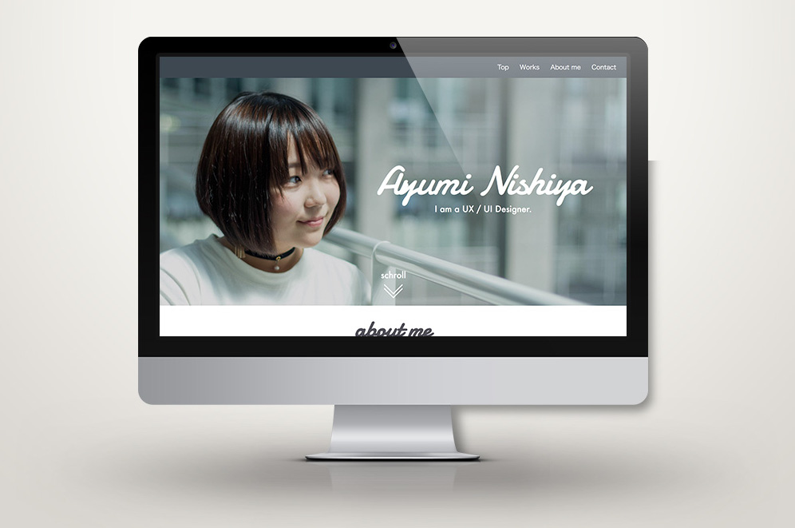

< 戻る
AyumiNishiyaのポートフォリオ
制作期間
2018.02.15 ~ 現在
担当範囲
画面設計,ワイヤフレーム作成,コーディング
使用したツール
Illustrator,html,css,sass(さわり程度)
メンバー
個人
コンセプト
どんな人物かを短時間で理解できるようにする
背景
自分のUI/UXデザイナーとしての考え方や、やり方を伝えるのには実際に触れるものを作ったほうが良いと思ったため製作
アピールポイント
自分がどんな考えを人物か先にわかってもらった上で、どういう仕事をしてきたのかを伝えることで自分がどんなデザイナーなのかをわかってもらいやすくした点
Process
1.ペルソナ作成
ターゲットである、企業の人事の人を想定したペルソナを作成。
2.コンセプト決定
ペルソナに基づいて、コンセプトを「どんな人物かを短時間で理解できるポートフォリオ」に決定
3.ワイヤーフレーム作成
コンセプトを元にワイヤフレームを作成。
4.コーディング
ワイヤーフレームを元にコーディング。
5.今後の予定
友人や企業の方にフィードバックをいただきながら改善していく。